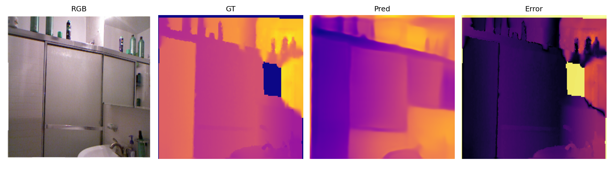
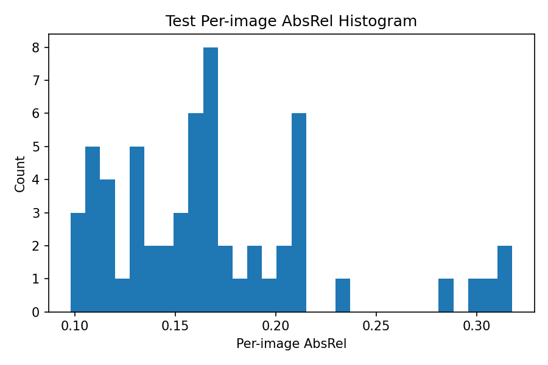

Architecture stayed fixed
The project did not change the core Depth Anything Small architecture. The main change was data scale through pseudo-label expansion.
This project now follows the original paper story more closely: keep the Depth Anything Small architecture fixed, start from a strong teacher, expand the dataset with pseudo labels, and train a student on more data than the initial labeled seed set.
The project did not change the core Depth Anything Small architecture. The main change was data scale through pseudo-label expansion.
The repo now explicitly shows teacher -> pseudo labels -> student retraining instead of stopping at a tiny supervised fine-tune.
All numbers on this page come from completed local runs on the held-out NYU-v2 subset test split.
Held-out test results on the `59`-image NYU-v2 subset.


Each NYU-v2 panel is organized as RGB | GT | Pred | Error. The key question is whether the model preserves large scene structure and relative depth ordering. The system should be interpreted as relative depth estimation, not exact metric distance measurement from one image.






cd /home/alexander/depth-project source .venv/bin/activate python src/prepare_indoor_pseudo_pool.py \ --root data/unlabeled/indoor_teacher_pool \ --limit 2000 python src/pseudo_label.py --config configs/teacher_student_poc.yaml python src/train.py --config configs/teacher_student_poc.yaml python src/eval.py --config configs/teacher_student_poc.yaml \ --checkpoint checkpoints/teacher_student_poc_best.pt